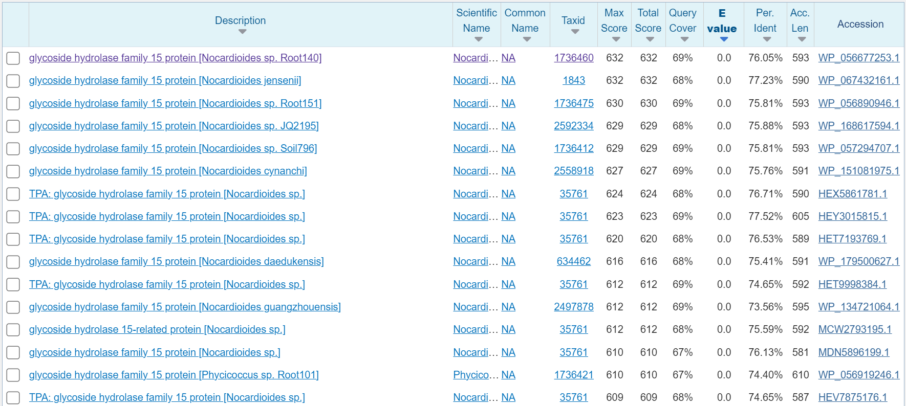
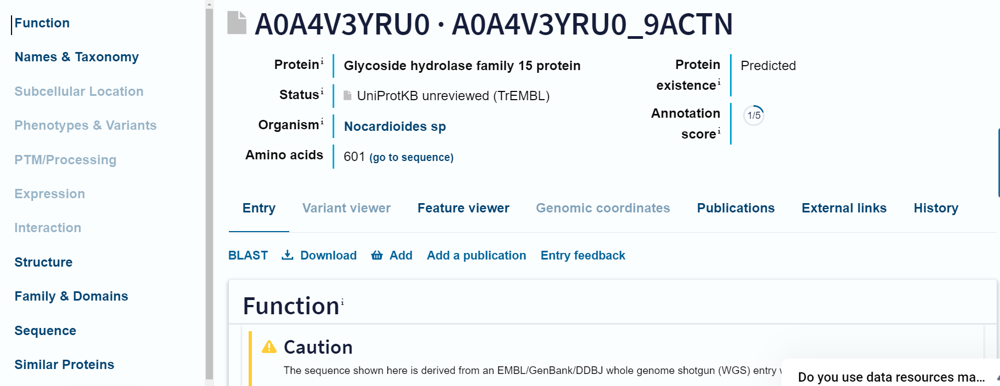
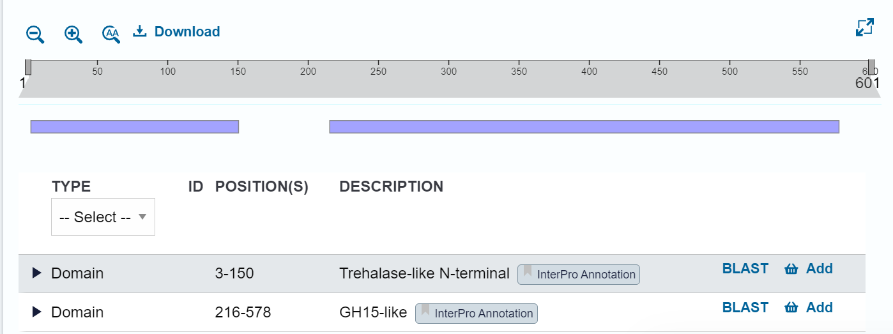
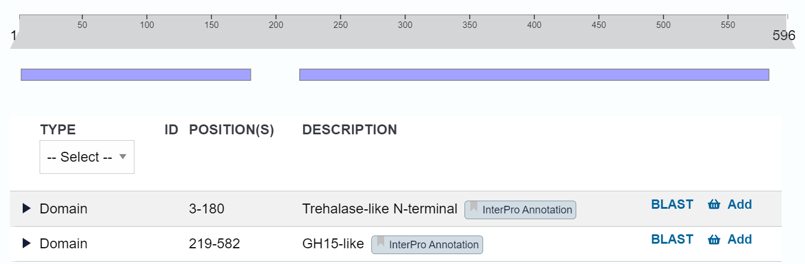
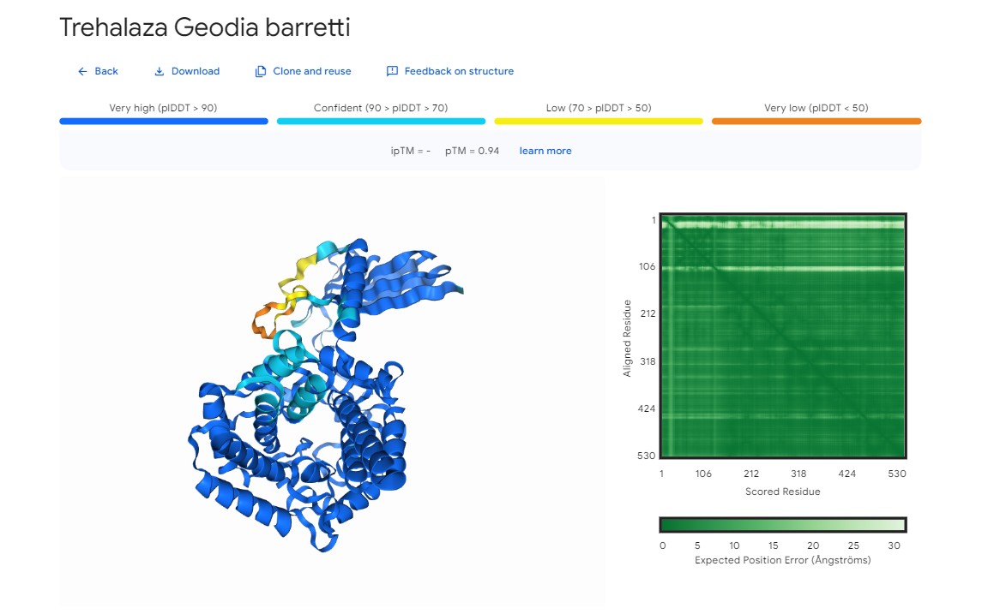
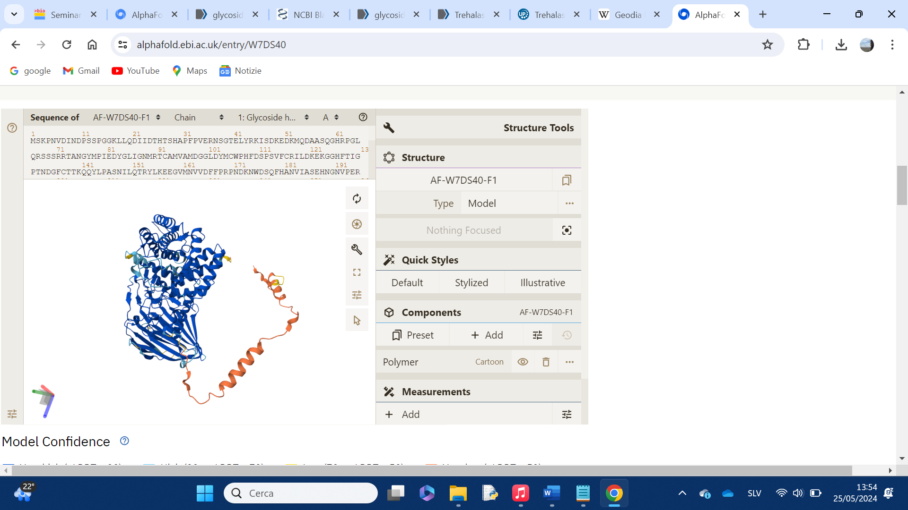
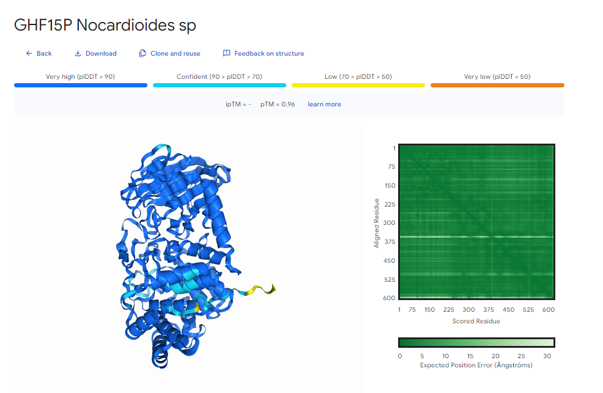

S22#
Avtor: Vanja Vogrič
Datum izdelave: 2024-05-25
Koda seminarja: S22
Vhodni podatek#
Povezava do datoteke z vhodnim podatkom: S22
Iskanje proteina#
Vključek#
Najprej sem poiskala kateri del dodeljenega zaporedja predstavlja vključek. To sem storila tako, da sem v Genbanku poiskala zaporedje plazmida pUC57 in v Clustal Omega vnesla to zaporedje ter zaporedje plazmida z vključkom v FASTA formatu. Izvedla sem globalno poravnavo. Iz datoteke je razvidno, da v originalnem zaporedju plazmida nukleotidi 0 - 1674 niso prisotni, kar pomeni, da vključek predstavlja del zaporedja od 0 do 1674.
Slika: 
Iskanje proteina z najvišjim ujemanjem#
S spletnim orodjem Blastx sem nato poiskala za kateri protein zapisuje nukleotidno zaporedje v vključku. Ker je bilo rečeno, da v zaporedju je lahko prisoten zapis za le en del proteina, me nizka stopnja ujemanja z najdenimi proteini ni presenetila. Pri iskanju z orodjem Blastx sem vnesla zaporedje od 0 do 2226 in uporabila filter iskanja po “Non redundant protein sequences”. Dobila sem protein 15 iz družine glikozid hidrolaz iz organizma Nocardioides sp.(glycoside hydrolase family 15 protein [Nocardioides sp. Root140]) s 76,05% ujemanjem. Slika: 
Iskanje proteina v zbirki Uniprot#
V zbirki Uniprot sem iskala protein s filtroma Protein name: glycoside hydrolase family 15 protein in Taxonomy: Nocardioides sp. Edini zadetek je bil protein z Uniprot ID A0A4V3YRU0, za katerega je znano aminokislinsko zaporedje, struktura pa je bila predvidena s programom AlphaFold. Slika: 
Rezultati analiz#
Ime proteina in izvorni organizem#
Glycoside hydrolase family 15 protein, Nocardioides sp. Uniprot ID: A0A4V3YRU0
Lokalizacija#
Neznana
Velikost proteina#
601 aminokislinskih ostankov
Domenska zgradba#
Trehalazna-N-končna domena (Trehalase-like N-terminal) 3-150 ak ostanki GH15 domena (GH15-like) 216-578 ak ostanki Slika: 
Post-translacijske modifikacije#
Neznano
Funkcija in substrat#
Glede na domeni proteina lahko sklepamo njegovo funkcijo.
Trehalazna domena se nahaja na N-koncu bakterijskih encimov trehalaz, ki katalizirajo hidrolizo alfa,alfa-trehaloze v dve molekuli D-glukoze. V bližini domene se ponavadi nahaja glikozid hidrolazna domena.
Funkcija GH15-like domene ni še jasna. Glede na to, da se ta nahaja v proteinih s funkcijo glikozil hidrolaze, glukoamilaze, alfa-glukozidaze in glukodekstranaze, lahko sklepamo, da je funkcija te domene povezana s hidrolizo glikozidnih vezi.
Iz funkcije zgoraj opisanih domen lahko sklepamo, da je funkcija proteina 15 iz družine glikozil hidrolaz povezana s hidrolizo glikozidnih vezi. Substrat je za trehalazno domeno sladkor alfa,alfa-trehaloza, za GH15-like domeno pa drugi kompleksni sladkorji.
Sorodni proteini#
Pri iskanju sorodnih proteinov na Uniprotu pod 100% in 90% podobnostjo ne najdemo zadetkov. Pod 50% podobnostjo nam Uniprot ponudi kar 248 zadetkov. Proteini so večinoma glukoamilaze, trehalaze in glukan-1,4-alfa-glukozidaze. Proteini s 50% ne izhajajo iz organizma Nocardioides sp.
Protein trehalaza (Uniprot ID: A0A168ERE8):#
Št ak ostankov: 615
Organizem: Isoptericola dokdonensis DS-3
Funkcija proteina: Za protein sta prav tako, kakor pri proteinu 15 iz družine glikozil hidrolaz, nahajanje in ekspresija neznani. Protein ima zgoraj opisano (Funkcija in substrat – Funkcija trehalazne domene) alfa,alfa-trehalazno aktivnost.
Domene:
Protein ima trehalazno-like terminalno-N-domeno in GH15-like domeno.
Slika: 
Protein glukoamilaza (Uniprot ID: A0A098YFK5):#
Št ak ostankov: 596
Organizem: Modestobacter caceresii
Funkcija proteina: Hidroliza škroba.
Domene: Protein ima trehalazno-like terminalno-N-domeno in GH15-like domeno. Slika: 
Najbolj in najmanj ohranjene regije#
Neznano
Podobni evkariontski proteini#
Za iskanje evkariontskih podobnih proteinov sem vnesla aminokislinsko zaporedje v Blastp in dala filter iskanja v evkariontskih organizmih.
Iz zadetkov sem izbrala 2 proteina, ki sta označena na sliki.
Slika: 
Protein trehalaza (Uniprot ID: A0AA35SZ10):#
Št ak ostankov: 530
Organizem: Geodia barretti
Funkcija proteina: Alfa,alfa-trehalazna aktivnost
Domene: Protein ima GH15-like domeno.
Slika: 
Protein: Protein 15 iz družine hidrolaz (Uniprot ID: W7DS40):#
Št ak ostankov: 738
Organizem: Bipolaris victoriae (strain FI3)
Funkcija proteina: Hidrolizna aktivnost.
Domene: Protein ima trehalazno in GH15-like domeno.
Slika: 
Funkcijska povezanost z drugimi proteini#
Glede na prisotnost domen, ki sta odgovorni za hidrolizo sladkorjev, sem sklepala, da je tudi funkcija celotnega proteina povezana s hidrolizo različnih sladkorjev. Substrat encima je zato po vsej verjetnosti kompleksen sladkor, ki ga ta cepi na enostavnejše enote. Tudi pri podobnih proteinih opazimo prisotnost obeh ali samo ene domene (trehalazna in/ali GH15-like), kar nakazuje na podobnost v funkciji med temi proteini. Glede na to, da za vse proteine obstaja samo predvidena struktura in, da funkcija in delovanje samih domen nista še povsem jasni, ne moremo sklepati kaj več o sorodnosti funkcije podobnih proteinov.
Model strukture#
Model strukture sem ustvarila s spletnim orodjem AlphaFold. Vnesla sem aminokislinsko zaporedje proteina v FASTA formatu.
SLika: 